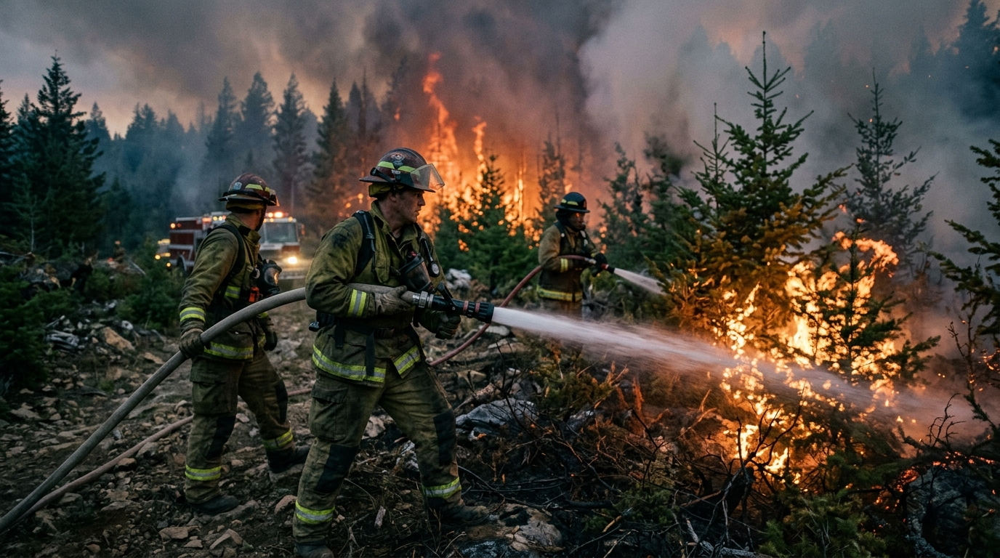
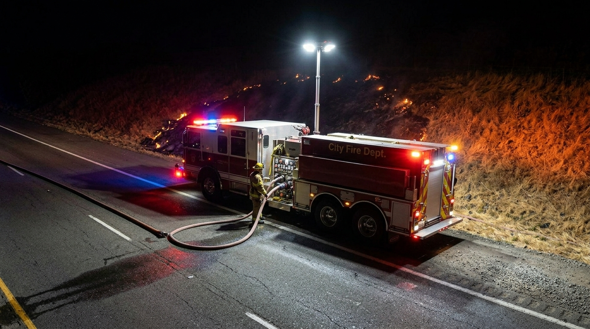
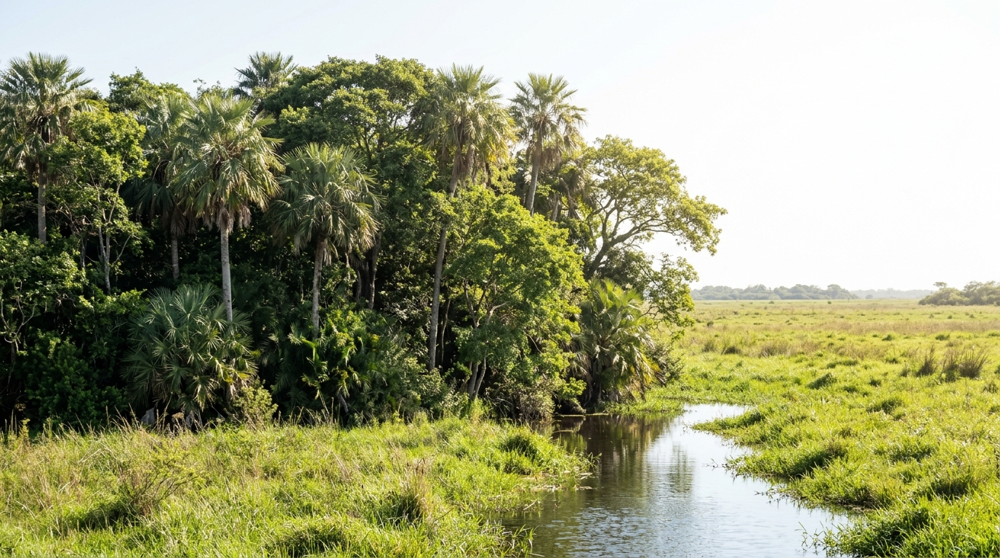

Inteligencia geoespacial en tiempo real
Detección, monitoreo y análisis predictivo de incendios forestales y deforestación en la República Argentina y el Cono Sur de América Latina.
El costo de cada hora
Los incendios forestales son una de las mayores amenazas ambientales, económicas y humanas de América del Sur. En Argentina, más de 900.000 hectáreas ardieron en un solo año. Cada hora sin información precisa es tierra perdida, vidas en riesgo y daño irreversible al ecosistema.
SPIYD fue diseñado para eliminar ese margen de incertidumbre. No sólo detecta: anticipa, analiza y genera respuestas operativas accionables en minutos.

Proceso operativo
Siete fuentes de datos satelitales activas en forma simultánea. Cobertura continua sin dependencia de ninguna agencia única. Actualización cada 15 minutos en condiciones operativas normales.
Motor de inteligencia artificial (Claude AI de Anthropic) que correlaciona datos satelitales con variables meteorológicas, cobertura vegetal, cartografía hídrica y algoritmos de riesgo internacionales.
Recomendaciones operativas en lenguaje natural, alertas georreferenciadas en tiempo real y reportes estructurados para equipos técnicos y tomadores de decisión institucional.
Infraestructura técnica
SPIYD integra simultáneamente datos de siete fuentes satelitales internacionales. Es la plataforma más completa de monitoreo de incendios del Cono Sur.
Algoritmos meteorológicos
Temperatura superior a 30°C, humedad relativa inferior al 30%, velocidad del viento mayor a 30 km/h. Combinación crítica para la propagación explosiva de incendios.
Sistema canadiense de índices de peligro de incendio forestal. Estándar internacional adoptado por más de 60 países. Integrado y georreferenciado en tiempo real.
Cartografía dinámica de biomasa, densidad forestal e índice NDVI actualizado por escenas satelitales. Correlación automática con riesgo de propagación.
Capa de cuerpos de agua, cursos fluviales y cortafuegos naturales integrada en el modelo predictivo. Análisis de contención georreferenciado.

Motor de inteligencia artificial
SPIYD integra la API de Claude (Anthropic) como motor central de análisis. El sistema no solo detecta: interpreta, correlaciona y genera recomendaciones operativas comprensibles para cualquier perfil de usuario, desde el técnico de campo hasta el funcionario de máxima decisión.
Para quién es SPIYD

Casos de uso
Coordinación en tiempo real de brigadas, recursos hídricos y accesos. Reducción comprobada del tiempo de respuesta inicial de horas a minutos.
Evaluación dinámica de exposición de cartera agropecuaria y forestal con datos satelitales actualizados. Cálculo continuo de índice de riesgo por parcela.
Verificación satelital de áreas de conservación, reservas naturales y zonas de amortiguamiento para organismos de control y auditoría ambiental.
Análisis histórico de incendios y deforestación para planificación de uso del suelo, corredores biológicos y zonificación de interfaz urbano-forestal.
Monitoreo continuo de corredores de transmisión eléctrica, oleoductos, gasoductos y rutas nacionales en zonas de alto riesgo de incendio forestal.
Generación automatizada de informes de impacto ambiental, pérdida de cobertura forestal y métricas de huella de carbono para reportes corporativos ESG.
Cobertura geográfica
SPIYD cubre la totalidad del territorio argentino y se extiende al Cono Sur, incluyendo Chile, Uruguay, Paraguay, Bolivia y el sur de Brasil. Cobertura sin zonas ciegas a resolución de 375 metros por píxel, actualizada en tiempo real.
Arquitectura del sistema
Python/Flask con arquitectura modular. Autenticación, gestión de usuarios, APIs de datos y sistema de auditoría completo. Compatible con Gunicorn + Nginx.
Frontend con Leaflet.js para visualización geoespacial. Capas dinámicas, filtros por región, zoom a nivel parcela, exportación de reportes.
Integración directa con la API de Anthropic (Claude AI). Análisis contextual en lenguaje natural. Actualizable con cada nuevo modelo sin rediseño.
Tres niveles de suscripción con modelos de facturación diferenciados. Compatible con AWS, GCP, Azure o infraestructura propia del cliente.
Siguiente paso
El equipo de SPIYD trabaja directamente con cada cliente para configurar el sistema según su cobertura geográfica, nivel de acceso y necesidades operativas específicas. Sin costos de implementación ocultos.